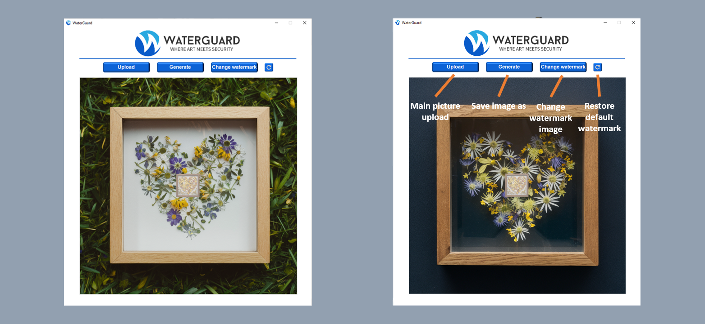

WaterGuard
WaterGuard is a simple yet powerful app for watermarking your images effortlessly. Enjoy a sleek interface with a stylish background image and easy-to-navigate buttons. Easily upload your images for a perfect fit. Apply the default WaterGuard watermark or upload your own, and change the watermark anytime with a click. One-click actions allow you to upload images, generate watermarked versions, change watermarks, and reset to the default watermark. Save your watermarked images with ease. Get started with WaterGuard to protect and personalize your images in a snap!